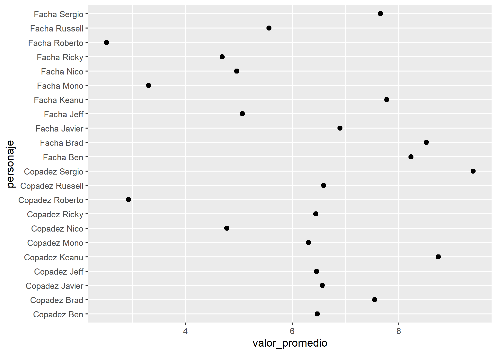

I once watched Ryan Timpe, the Lead Data Scientist at Lego, where he shared how he sometimes took on fun projects to learn new data analysis skills. In his talk at the RStudio Conference, he mentioned analyzing the dialogues from The Golden Girls using text mining techniques to find the most frequent words. Every time one of the characters said the magic words, they’d take a “white shot” of whatever they were drinking.
This post is about something similar. I wanted to learn how to use images in my visualizations, and that’s how this project was born—using images of people with “similar” features to mine and incorporating those photos into a scatter plot.
What might seem like a silly project involved:
Creating a Google Form.
Collecting data from responses.
Processing the results.
Including visualizations with people’s images.
Projects like this make learning feel less heavy and give you extra motivation to find solutions and get results.
A Bit of Context
This is me:
Photo of me on my honeymoon in Mendoza
As you can see, I have medium-length hair, bangs, and a goatee. A lot of people say I look like Nicol√°s del Ca√±o ü§∑ ‚Äîa member of the Socialist Workers Party in Argentina‚Äîbecause he has a similar haircut and also rocks a beard.
Nicolás del Caño
We don’t look that similar in these photos, but let me share a story. When my daughter was around three years old, there was a campaign for parliamentary elections, and posters of all the political parties were everywhere—including, of course, the PTS with Nicolás del Caño. One day, my wife and daughter were walking down the street, and as they approached one of Del Caño’s posters, my daughter pointed at it and said, “Daddy!” as if it were me on the poster. So, there’s some resemblance, I guess.
She also once pointed at a Johnny Depp poster for Sauvage perfume and said the same thing, but no one believes that one.
Other characters my friends joke I resemble include Gigoló, Roberto Baradel, and Mono Burgos.
El Gigoló
Roberto Baradel
El Mono Burgos
I know what you’re thinking: “With friends like these, who needs enemies?” But they’re lovable anyway.
The Idea: k-nn
This analysis idea came up one day while explaining a clustering method called k-nn. Clustering methods are data science techniques used to find groups (or “clusters”) within data.
The k-nn method (“k-nearest neighbors”) assigns each individual to a cluster based on the features of their “neighbors.” In other words, it determines which group each case belongs to based on what it most closely resembles.
To explain this visually, I drew this on Paint:
Paint drawing showing clusters
The idea is that, within this dataset, I’m closer to the cluster of Mono Burgos and Nicolás del Caño than to the cluster of Keanu Reeves, Jeff Bridges, and Brad Pitt.
Then I had a thought: what if I did this with actual data?
Doing Weird Stuff for Normal People in R
The idea was to replicate the graphic above but with real data. So, I started by searching for photos of Argentine and international figures with medium-to-long hair, beards, and, in some cases, a few extra pounds.
To standardize the images, I used Canva to resize them to similar dimensions. Then, I created a Google Form with each image and asked my friends to rate the “facha” (Argentine slang for physical attractiveness) and “copadez” (how cool or likable someone is) on a scale from 1 to 10.
The characters involved were:
Nicolás del Caño
Roberto Baradel
Mono Burgos
Ricardo Caruso Lombardi
Ben Affleck
Jeff Bridges
Brad Pitt
Javier Bardem
Keanu Reeves
And yours truly üòâ
In my original analysis, I pulled the data directly from the Google Sheets linked to the form. For reproducibility purposes, I’ll use a CSV file here so you can replicate the results.
Loading and Preparing Data
Let’s start by loading the libraries and importing data from a repository.
# A tibble: 6 × 3
id personaje puntaje
<int> <chr> <dbl>
1 1 Facha de Keanu 10
2 1 Copadez de Keanu 10
3 1 Facha de Russell 7
4 1 Copadez de Russell 10
5 1 Facha de Nico 1
6 1 Copadez de Nico 1
We started with 66 rows and 24 columns and ended up with a data frame of 1,452 rows and 3 columns. After removing intermediary words like "de" and "del" from names, we created separate columns for “facha” and “copadez.”
View code
# Split nominal variablesclones <- clones %>%mutate(personaje =str_remove(personaje, "de "),personaje =str_remove(personaje, "del "))# Explore average score of each characterclones %>%group_by(personaje) %>%summarise(valor_promedio =mean(puntaje)) %>%ggplot(aes(x = valor_promedio, y = personaje)) +geom_point(size =2)

View code
# Split the column 'personaje' (character) into two columns, one for the metric, the other for the nameclones <- clones %>%separate(personaje, into =c("metrica", "persona"))# Pivot to wide format clones <- clones %>%pivot_wider(id_cols =c(id, persona),names_from = metrica,values_from = puntaje)# Explore the new data framehead(clones)
# A tibble: 6 × 4
id persona Facha Copadez
<int> <chr> <dbl> <dbl>
1 1 Keanu 10 10
2 1 Russell 7 10
3 1 Nico 1 1
4 1 Roberto 1 1
5 1 Jeff 5 5
6 1 Brad 10 10
Finally, we had a dataset with 726 rows—one for each vote per character—and four columns: ID, character (personaje), “facha,” and “copadez.”
View code
# Calculate the average scores for each character and plot resultsresultados <- clones %>%group_by(persona) %>%summarise(facha_promedio =mean(Facha),copadez_promedio =mean(Copadez))ggplot(resultados, aes(x = copadez_promedio, y = facha_promedio, color = persona)) +geom_point(size =3) +labs(title ="Average Awesomeness and Gorgeousness",x ="Avg Awesomeness",y ="Avg Gourgeness",color ="Person")
This gave us the foundation for our results. To make the chart less boring, let’s spice it up with images.
Adding Images to the Chart
As mentioned earlier, I used Canva to resize all the images and saved them in a folder called “clones.” Instead of uploading each photo individually, I created a data frame linking the names of the characters to their corresponding image files.
View code
# Create a vector with the name of the peoplepersona <- resultados %>%select(persona) %>%pull()# Create a vector of imagesruta <-"pics"# Picture pathextension <-"png"# Extension of the image files# Name of the filesimagen <-c("Ben", "Brad", "Javier", "jeff", "keanu", "mono", "nico", "ricky", "roberto", "russell", "sergio")# Create the vector of photos with the path and file extensionfoto <-str_c(ruta, imagen, sep ="/")foto <-str_c(foto, extension, sep =".")# Create the data frame and add the scores to itpics <-data.frame(persona, foto)# See the results of this processpics
persona foto
1 Ben pics/Ben.png
2 Brad pics/Brad.png
3 Javier pics/Javier.png
4 Jeff pics/jeff.png
5 Keanu pics/keanu.png
6 Mono pics/mono.png
7 Nico pics/nico.png
8 Ricky pics/ricky.png
9 Roberto pics/roberto.png
10 Russell pics/russell.png
11 Sergio pics/sergio.png
We now had a data frame with 11 rows and 2 columns (name and image path), which we integrated into the dataset with average “facha” (gorgeousness) and “copadez” (awesomeness) scores.
Finally, it was time to add the images to the chart:
# A tibble: 6 × 4
persona facha_promedio copadez_promedio foto
<chr> <dbl> <dbl> <chr>
1 Ben 8.23 6.47 pics/Ben.png
2 Brad 8.52 7.55 pics/Brad.png
3 Javier 6.89 6.56 pics/Javier.png
4 Jeff 5.06 6.45 pics/jeff.png
5 Keanu 7.77 8.74 pics/keanu.png
6 Mono 3.30 6.30 pics/mono.png
Finally, it was time to add the images to the chart:
View code
# Final Resultggplot(resultados, aes(x = copadez_promedio, y = facha_promedio)) +geom_image(aes(image=foto), size =0.08) +theme_minimal() +scale_x_continuous(limits =c(1,10)) +scale_y_continuous(limits =c(1,10)) +labs(title ="Average Awesomeness and Gorgeousness",subtitle ="n = 66",x ="Avg Awesomeness",y ="Avg Gourgeness",caption ="No aunt was part of this analysis")
According to the data, I‚Äôm farther from Nicol√°s del Ca√±o and Roberto Baradel and closer to Keanu Reeves. So, the data says I look like Keanu. Facts, not opinions üòé.
What Did I Learn?
I learned to use a new package, ggimage, which allows you to add images to charts.
A mistake in the form design (labeling one field as “Facha del Mono” in Spanish) required extra data cleaning—a valuable lesson that helped me prevent potential issues in a subsequent diversity survey project for a client.
Handling data transformations—pivoting from “wide” to “long” formats and back—was key. Once I managed that, calculating results became straightforward.
This project took two days of work, tutorials, documentation, and a lot of trial and error. While it was a lot of effort, the silliness of the project removed much of the pressure, making it easier to interpret error messages and find the right solutions.
Projects like this are perfect right after finishing a tutorial or course. The datasets in tutorials are often clean and controlled, but working with your own data introduces real-world challenges. Doing a fun project like this without the pressure of “adding business value” is a great way to test your skills.
So, I invite you to take on a ridiculous project and share it with the world.
Closing Words
If you’d like to see the script, you can find it in the repository following this link.